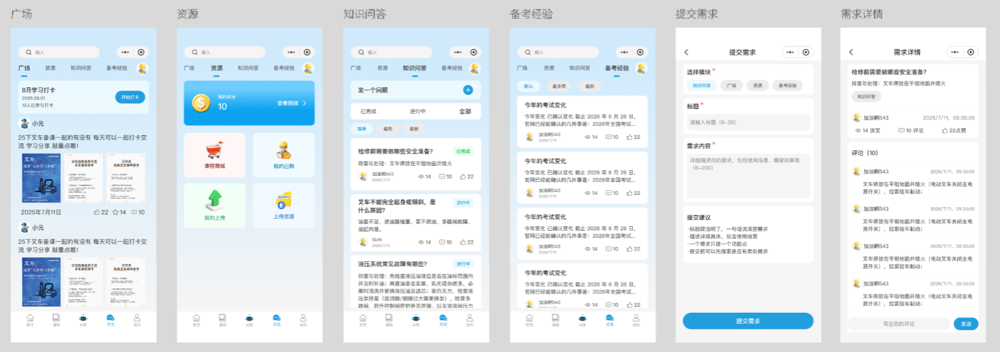
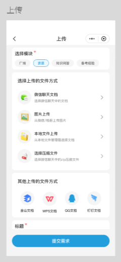
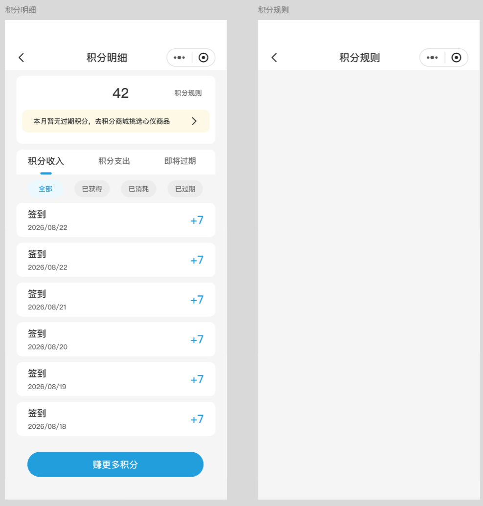

| # | 模板区（forum.uvue 行段） | 候选 section 组件 / composable | 说明 |
|---|---|---|---|
| 1 | header 2–17 | 留壳层 | 消息角标+发帖入口，16 行，不值得拆 |
| 2 | tab-bar 18–38 | ForumTabBar | props: current/unread/avatar；emit switch/personal-activity |
| 3 | search-bar 39–45 | 留壳层 | 发帖入口条，7 行 |
| 4 | sort-bar 46–66 | SquareSortBar（并入 SquareFeed） | 最新/热门/逆序/正序 |
| 5 | 打卡卡片 100–132 | CheckInCard.vue | 纯展示 + emit start |
| 6 | 帖子卡 133–197 | TopicCard.vue | 广场/问答共用（问答多一行作者+统计布局变体，走 prop） |
| 7 | 招聘区 67–76,198–238 | RecruitPanel.vue | 子tab公告/职位 + 两套卡片，自含状态 |
| 8 | 问答区 77–97 | QaHeader（并入问答 feed） | 发一个问题条 + 推荐/最热/最新 |
| 9 | 资源区 239–285 | ResourcePanel.vue | 金币 banner + 2×2 卡（课程商城/我的已购/我的上传/上传资源） |
| 10 | 悬浮按钮 286–290 | 留壳层 | 5 行 |
| — | script 293–604 (311行) | useTopicFeed / useRecruitFeed / useResourcePoints | 列表分页+排序下沉 composable；壳层只留 tab 状态 |
| — | style 605–1419 (814行) | 随组件走 | 各 section 的 scoped 样式随迁（R2：冻结区不动） |
目标：壳层 ≤250 行；每组件 ≤600 软预算。api/forum.uts 现 560 行（票面写 716，已缩水）——收紧按 T01 mapper-callback 出口做 DTO+mapper，行数是次要目标。
| # | 模板区（行段） | 候选 section 组件 / composable | 说明 |
|---|---|---|---|
| 1 | header 2–21 | 留壳层 | 返回+标题+删除(注释态) |
| 2 | topic-section 27–65 | TopicHeader + TopicBody | 作者行/统计/正文/图片网格 |
| 3 | replies-section 66–131 | ReplyList.vue | 含排序条；采纳答案高亮逻辑在 item 内 |
| 4 | 回复输入栏 132–150 | ReplyComposer.vue | 自含输入状态，emit send |
| 5 | 举报弹窗 151–170 | ReportDialog.vue | props: visible/target；emit submit |
| — | script 172–775（604行） | useTopicDetail / useReplies / useReport / useAccept | 本文件真正的胖子：详情加载+回复分页排序+举报+采纳+点赞收藏全在一个 setup。按域拆 4 个 composable，壳层编排 |
| — | style 776–1385 (610行) | 随组件走 | 同 forum.uvue |
| 对比项 | 当前实现 | 原型图「提交需求」 | 处置 |
|---|---|---|---|
| 分类 chips | 广场 / 资源 / 知识问答（资源 value=discussion） | 知识问答 / 广场 / 资源 / 备考经验 | → 记 issue（见差异表 #1） |
| 标题限制 | 1–100 | 6–30 | → 记 issue（#3） |
| 内容限制 | 1–10000 | 6–2000 | → 记 issue（#3） |
| 提交建议卡 | 无 | 有（4 条指引文案） | → 记 issue（#3） |
| 图片区 | 有（/9） | 无 | → 记 issue（#3） |
本票对 forum-create 无动作（预算内）；上表差异全部只记录不实现。



| # | 原型图所示 | 当前实现 | 归属 / 处置 |
|---|---|---|---|
| 1 | 第4个 tab =「备考经验」 | 第3个 tab =「招聘」（公告/职位子tab）；全库无「备考」字样 | 产品级分歧 → 记 issue，手术保留「招聘」 |
| 2 | 问答有「已完成/进行中/全部」状态筛选 + 卡片状态徽章 | 只有 推荐/最热/最新；无状态徽章（后端有 solved/accept 机制，前端列表未消费） | 记 issue；手术不补 |
| 3 | 提交需求表单（6–30 标题 / 6–2000 内容 / 提交建议卡 / 无图片） | forum-create（1–100 / 1–10000 / 图片 /9） | 记 issue |
| 4 | 独立「上传」页：微信文档/相册/本地文件/压缩包 + 网盘/WPS/QQ/钉钉 | 无此页；资源上传 = forum-create 选「资源」分类 + 图片 | 新功能设计 → 记 issue（涉及后端能力，远超 #642） |
| 5 | 积分明细三 tab + 已获得/已消耗/已过期 chips | pages/points/points-detail.uvue；其数据源正是 #662 发现的幻影接口 /points/records（mock 假数据兜底中） | 归 T14（#652）+ #662 决策，不混入本票 |
| 6 | 广场打卡卡 / 资源金币banner+2×2 / 详情评论结构 | 与当前实现一致 | ✓ 手术像素级保留，作为验收基线 |